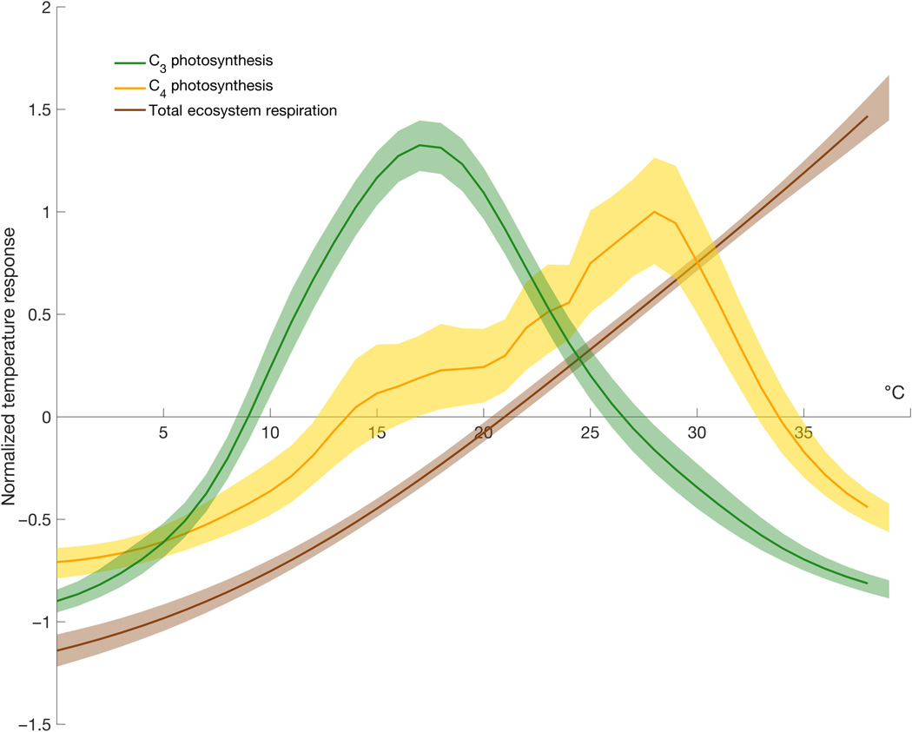
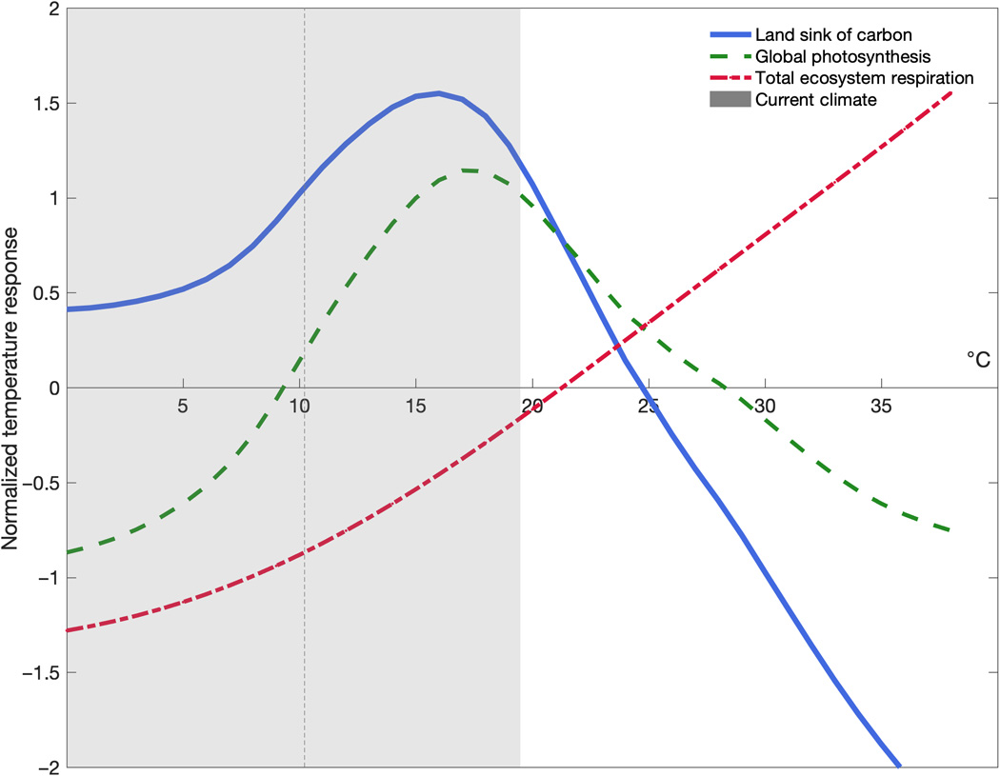
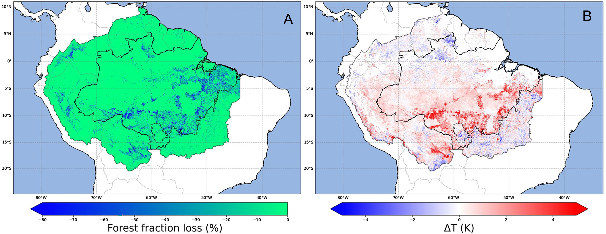

16 Forests
16.1 Tropicalforests
Tropical rainforests have almost no soil, their incredible diversity allows for direct recycling in the first centi- or decimeters. But they need a size to funtcion properly, to maintain their climate. Thus destroying them for farmland is an idiocy beyond comprehension, because they just become steppe after short. Reduced in size they collapse quickly, that’s what they do around the world, with dire consequences. e.g. erosion, drought …
16.2 Forests tipping: go from sink to source of CO2 due to temperature increase.
New research shows that Earth’s overheated climate will alter forests at a global scale even more fundamentally, by flipping a critical greenhouse gas switch in the next few decades. The study suggests that, by 2040, forests will take up only half as much carbon dioxide from the atmosphere as they do now, if global temperatures keep rising at the present pace.
Global warming has contributed to thinning canopies in European forests and to sudden die-offs of aspen trees in Colorado, as well as insect outbreaks that are killing trees around the world. In many places, forests are not growing back.
The data show a clear temperature limit, above which trees start to exhale more CO2 than they can take in through photosynthesis. The findings mark a tipping point, of sorts, at which “the land system will act to accelerate climate change rather than slow it down,”
Trees From Sink to Source (InsideClimateNews)
At present, the land provides a “climate service” by absorbing around 30 per cent of the emissions caused by humans each year.
Unlike other tipping elements in the Earth system, the climate tipping point for the terrestrial biosphere could be exceptionally close – 20-30 years away – without action.
Plant respiration, the process by which plants produce energy for growth, causes CO2 to be released into the atmosphere.
The ‘buffer’ or ‘discount’ against carbon emissions that we currently receive from the biosphere is more fragile than we previously realised.
Climate models are tools used by scientists to simulate how the world is likely to respond to greenhouse gas emissions.
However, it is worth noting that the global dataset used in the study uses “very few samples from tropical regions”. This means that it is still not fully understood how tropical forests are responding to rising temperatures.
Memo Duffy
The temperature dependence of global photosynthesis and respiration determine land carbon sink strength. While the land sink currently mitigates ~30% of anthropogenic carbon emissions, it is unclear whether this ecosystem service will persist and what hard temperature limits, if any, regulate carbon uptake.
The mean temperature of the warmest quarter (3-month period) passed the thermal maximum for photosynthesis during the past decade. At higher temperatures, respiration rates continue to rise in contrast to sharply declining rates of photosynthesis.
Under business-as-usual emissions, this divergence elicits a near halving of the land sink strength by as early as 2040.
The difference between gross primary productivity and total ecosystem respiration (carbon uptake by vegetation minus carbon loss to the atmosphere) comprises the metabolic component of the land carbon sink [net ecosystem productivity (NEP)].
To date, land ecosystems provide a climate regulation service by absorbing ~30% of anthropogenic emissions annually. While temperature functions as a key driver of year-to-year changes in the land carbon sink, its temperature response is still poorly constrained at biome to global scales, making the carbon consequences of anticipated warming uncertain.
Like all biological processes, metabolic rates for photosynthesis and respiration are temperature dependent; they accelerate with in- creasing temperature, reach a maximum rate, and decline thereafter.
Highly divergent land carbon sink trajectories from Earth system models.
Continued future increases in sink strength due to the CO2 fertilization.

The temperature response of global photosynthesis shows distinct maxima at 18°C for C3 and 28°C for C4 plant systems. In contrast to photosynthesis, respiration rates increase across the range of ambient temperatures (up to 38°C), with no evidence of Tmax or rate decline. The thermal maxima of leaf and soil respiration reside at ~60°-70°C.
Responses diverge at temperatures above Tmax. The imbalance grows more pronounced as temperature increases.
Current climate mostly lies just below Tmax where slight increases in temperature act as climate fertilization of land carbon uptake. Under anticipated warming foreshadowed by historical temperature extremes and coincident land carbon loss—however, more and more time will be spent above Tmax. Past this threshold, the land carbon balance will first weaken and ultimately reverse sign from carbon sink to carbon source.
25°C constitutes a powerful tipping point for the land sink of carbon and a formidable positive climatic feedback,

Currently, less than 10% of the terrestrial biosphere experiences where land carbon uptake is degraded. For regions that do experience these temperatures, exposure is limited to 1 to 2 months or constitutes areas with sparse to no vegetation.
Under business-as-usual emissions, by 2100, up to half of the terrestrial biosphere could experience temperatures past the treshold.
The impact of elevated temperatures on the land sink is more than a function of cumulative area. Biomes that cycle 40 to 70% of all terrestrial carbon including the rainforests of the Amazon and Southeast Asia and the Taiga forests of Russia and Canada are some of the first to exceed biome-specific Tmax for half the year or more. This reduction in land sink strength is effectively front-loaded in that a 45% loss occurs by midcentury, with only an additional 5% loss by the end of the century. These estimates are conservative as they assume full recovery of vegetation after temperature stress and ignore patterns and lags in recovery.
In contrast to any CO2 fertilization effect, anticipated higher temperatures associated with elevated CO2 could degrade land carbon uptake. Failure to account for this results in a gross overestimation of climate change mitigation provided by terrestrial vegetation.
We are rapidly entering temperature regimes where biosphere productivity will precipitously decline and calls into question the future viability of the land sink.
Duffy(2021) Temperature tipping point of the terrestrial biosphere (pdf)
16.2.1 Photosynthesis Failure
Pyzik on Doughty
Tropical forests could become so hot that some kinds of leaves will no longer be able to conduct photosynthesis.
The photosynthetic machinery in tropical trees begins to fail at about 46.7C on average. The research suggests that forests may be nearing dangerous temperature thresholds sooner than expected.
Using a combination of high-resolution data from Nasa’s thermal imaging instruments on the International Space Station and ground-based experiments in tropical forests across the world, researchers found that a small fraction, approximately 0.01% of all leaves, are already exposed to temperatures beyond their functional limits.
Models predict that once we hit a global temperature increase of 3.9 C, these forests might experience mass leaf damage.
Leaf-warming experiments revealed a nonlinear rise in temperatures. Warming leaves by 2, 3 or 4C, the highest leaf temperatures actually increased by 8C. A concerning nonlinear feedback not expected.
Tropical forest air temperatures increase by greater than 4C, could give massive leaf death, possible tree mortality and species turnover across all tropical forests.
The photosynthetic response would be the tip of the iceberg in terms of effects – reduced carbon uptake, likely increased mortality and even triggering possible transitions from forest to savannah.
The importance of this work is that it is a first look at the specific impact of this leaf-scale warming on photosynthesis in tropical forests. While it is quite specific in one sense, it also provides a really interesting look at one of the underpinning processes in this region, and what might happen to it in the near future .
What the study doesn’t look at is heatwaves. We still might see tree deaths from overheating for limited periods during heatwaves.
Pyzik (2023) Tropical forests face ‘massive leaf death’ from global heating. (Guardian)
Doughty Abstract
The critical temperature beyond which photosynthetic machinery in tropical trees begins to fail averages approximately 46.7 °C (Tcrit)1. However, it remains unclear whether leaf temperatures experienced by tropical vegetation approach this threshold or soon will under climate change. Here we found that pantropical canopy temperatures independently triangulated from individual leaf thermocouples, pyrgeometers and remote sensing (ECOSTRESS) have midday peak temperatures of approximately 34 °C during dry periods, with a long high-temperature tail that can exceed 40 °C. Leaf thermocouple data from multiple sites across the tropics suggest that even within pixels of moderate temperatures, upper canopy leaves exceed Tcrit 0.01% of the time. Furthermore, upper canopy leaf warming experiments (+2, 3 and 4 °C in Brazil, Puerto Rico and Australia, respectively) increased leaf temperatures non-linearly, with peak leaf temperatures exceeding Tcrit 1.3% of the time (11% for more than 43.5 °C, and 0.3% for more than 49.9 °C). Using an empirical model incorporating these dynamics (validated with warming experiment data), we found that tropical forests can withstand up to a 3.9 ± 0.5 °C increase in air temperatures before a potential tipping point in metabolic function, but remaining uncertainty in the plasticity and range of Tcrit in tropical trees and the effect of leaf death on tree death could drastically change this prediction. The 4.0 °C estimate is within the ‘worst-case scenario’ (representative concentration pathway (RCP) 8.5) of climate change predictions2 for tropical forests and therefore it is still within our power to decide (for example, by not taking the RCP 6.0 or 8.5 route) the fate of these critical realms of carbon, water and biodiversity.
Doughty (2023) Tropical forests are approaching critical temperature thresholds (paywall)
16.3 Deforestation
16.3.1 Warming effects of deforestation
Watts on Butt
The agricultural heartland of Mato Grosso, where crops are already suffering from drought and extreme heat, would be just over half a degree celsius hotter by 2050 if deforestation continued at the rapid rate of recent years.
The average tree had a cooling effect equivalent to two to three 2.5kW air conditioners working at full power every hour of every day - through evapotranspiration.
More and more, we are demonstrating the big benefits the forests bring to surrounding regions. For farmers, they bring cooler air and more rainfall. Hopefully putting numbers on these benefits will help to persuade a broader set of people to protect forest areas.
Earlier this year, a paper showed that forest clearance reduced rainfall up to 125 miles away. More recently, research at a greater scale demonstrated that the Amazon was coupled with the South American monsoon and that continued deforestation could reduce regional precipitation by 30% with dire consequences for food production.
Until now, studies on the impact of forest clearance on heat have concentrated on local effects with a clear correlation between loss of tree cover and higher temperatures in the area where the trees were cut down. The new research went further by looking at whether there is also a warming effect over a wider area. Using satellite data and artificial intelligence, the authors found a 0.7C increase in temperature for each 10-percentage point loss of forest within a radius of 60 miles.
If we could reduce deforestation, then we could avert a good amount of regional warming. I see that as a big opportunity. It demonstrates the big benefit of reducing deforestation for local farmers … The most important thing is that states like Mato Grosso can follow different futures. This hands back control to regions and states. They could really reduce the amount of warming they will be exposed to.
Watts (2023) Deforestation has big impact on regional temperatures, study of Brazilian Amazon shows
Butt Significance
Tropical deforestation warms the climate with negative impacts on people living nearby. Most previous studies have focused on the local warming caused by deforestation and less is known about how deforestation impacts surrounding areas. Our study used satellite data to show that deforestation in the Amazon caused substantial warming up to 100 km away from the location of forest loss. We show that this nonlocal warming increased deforestation-induced warming by a factor of four. We estimate that reducing deforestation in the Brazilian Amazon could reduce future warming in the southern Amazon by 0.56 °C. These findings highlight the role of deforestation in regional climate change and emphasize the importance of reducing deforestation for climate adaptation and resilience in the Amazon.
Butt Abstract
Tropical deforestation impacts the climate through complex land–atmosphere interactions causing local and regional warming. However, whilst the impacts of deforestation on local temperature are well understood, the regional (nonlocal) response is poorly quantified. Here, we used remote-sensed observations of forest loss and dry season land–surface temperature during the period 2001 to 2020 to demonstrate that deforestation of the Amazon caused strong warming at distances up to 100 km away from the forest loss. We apply a machine learning approach to show nonlocal warming due to forest loss at 2–100 km length scales increases the warming due to deforestation by more than a factor 4, from 0.16 K to 0.71 K for each 10-percentage points of forest loss. We estimate that rapid future deforestation under a strong inequality scenario could cause dry season warming of 0.96 K across Mato Grosso state in southern Brazil over the period 2020 to 2050. Reducing deforestation could reduce future warming caused by forest loss to 0.4 K. Our results demonstrate the contribution of tropical deforestation to regional climate warming and the potential for reduced deforestation to deliver regional climate adaptation and resilience with important implications for sustainable management of the Amazon.

Figure: Forest loss and surface temperature change during 2001 to 2020. (A) Percentage point loss (%) in forest fraction. (B) Change in surface temperature (ΔT, Kelvin) of the driest month. Change in forest fraction and ΔT over 2001 to 2020 is calculated as the difference between the mean of the first 3-y and the last 3-y of the study period (i.e., 2001–2003 versus 2018–2020). Data are shown for the Amazon basin with the boundary of the Brazilian Amazon biome also shown.
Butt (2023) Amazon deforestation causes strong regional warming
16.4 Amazonas Firetrap
PIK News
Fire can be a decisive factor for a potential tipping of the Amazon rainforest, as it is capable of locking large parts of the Amazon in a treeless state. While naturally not occurring in rainforests, fire can play an increasing role once the forest is damaged, thinned or completely lost, up to a status where fire is the dominating driver of the ecosystem.
Fire is the important factor for locking the Amazon in a grassland state, preventing 56-86% of the Amazon from regrowing, depending on the strength of climate change. Reversing the Amazon forest loss becomes increasingly harder the more forest is lost, and fire puts another lever onto this coherence.
Usually, the trees of the Amazon transport enormous amounts of water back to the atmosphere, which they originally received as rain. This water can form new rain locally or downwind in a process called moisture recycling basically forming “flying rivers”, not only stabilizing the Amazon as whole but also enabling it to extent into regions which would be too dry without this process. This coherence is the main reason why the Amazon is considered a tipping element of the Earth system. Global warming and deforestation can damage these flying rivers leading to a self-reinforcing feedback of forest loss. The new study now underlines how fire dynamics help to push and lock the Amazon towards and in a savanna-like or treeless state.
n contrast, in simulations without fire, the forest was able to recover over a longer time period of within 250 years, which emphasizes the important role of fire for the irreversibility of tropical deforestation. For the first time, it has been possible to calculate the feedbacks between fire, rainforest and climate in a process-based manner using the Earth system model POEM (Potsdam Earth Model).
Druke Abstract
The Amazon forest is regarded as a tipping element of the Earth system, susceptible to a regime change from tropical forest to savanna and grassland due to anthropogenic land use and climate change. Previous research highlighted the role of fire in amplifying irreversible large-scale Amazon die-back. However, large-scale feedback analyses which integrate the interplay of fire with climate and land-use change are currently lacking. To address this gap, here we applied the fire-enabled Potsdam Earth Model to examine these feedback mechanisms in the Amazon. By studying forest recovery after complete deforestation, we discovered that fire prevents regrowth across 56-82% of the potential natural forest area, contingent on atmospheric carbon dioxide levels. This emphasizes the significant contribution of fire to the irreversible transition, effectively locking the Amazon into a stable grassland state. Introducing fire dynamics into future assessments is vital for understanding climate and land-use impacts in the region.
Druke Conclusions
Employing a fire-enabled Earth system model, this study demonstrated that fire could prevent the recovery of 56–82% of the Amazon forest (353–515 Mio ha, depending on atmospheric CO 2 concentration) after a large-scale deforestation event, showing a history-dependent bi-stability of the Amazon basin ecosystem. Several positive feedback loops, for instance, the reduction of evapotranspiration and precipitation related to tree loss, increased temperatures, and fire activity, stabilized the grassland state in more than half of the Amazon basin in our model simulations. On the other hand, with deactivated fire disturbance, the forest was able to almost completely recover from the grassland state. Therefore, our model simulations show that fire is a crucial factor in evaluating the potential future forest recovery. Fire disturbance, along with large-scale deforestation, can create a lock-in effect that prevents the forest from returning to its ori- ginal state. This implies that the system state could change dra- matically if deforestation and climate change surpass certain thresholds. Our results provide another strong argument for the need to protect the Amazon forests, by stopping deforestation and reducing global CO 2 emissions as they question the feasibility of future reforestation measures without fire control.
Druke (2023) Fire may prevent future Amazon forest recovery after large-scale deforestation (pdf)
16.5 Plant and Cut - Forest CCS
Wood can also serve purely as a long-term carbon storage device. The key to locking away the carbon is to cut off the oxygen supply to microbes, thereby preventing decomposition.
Natural experiments show how this can be done. 19th-century lumberjacks in the US and Canada frequently stored logs on the surfaces of the Great Lakes or floated them down rivers, some of which ended up sinking along the way. These have remained in such good condition that a modern-day cottage industry has arisen to recover the logs and turn them into everything from hardwood floors to violins. New Zealand has a similar industry with logs that were fortuitously buried in swamps as long as 60,000 years ago.
Based on such examples, scholars have proposed chopping down trees or collecting fallen logs and intentionally stowing them away. That could mean sinking them to the bottom of lakes, interring them in abandoned mines or burying them in specially dug trenches. The idea hasn’t gotten much traction yet, but in 2013, the Quebec Ministry of Agriculture, Fisheries and Food funded a pilot project to dig a trench and bury 35 metric tons of wood. The project came to about $29 per metric ton of CO2 sequestered, according to government scientist Ghislain Poisson, in line with a theoretical estimate of $10-$50.
That is cheaper than most high-tech forms of carbon capture and storage, which usually involve machines that filter carbon out of the air and pump it underground. Sequestering carbon at the typical power plant, where emissions are highly concentrated, runs to $30-$91 per metric ton of CO2, but in open air, which is the holy grail, costs theoretically range from $94-$232. To help this promising new technology get off the ground (or rather, into the ground), the federal government offers a tax credit of about $35 for every metric ton of CO2 removed in industrial carbon capture and storage. It’s a policy that has enjoyed strong bipartisan support for over a decade.
16.6 Deforestation Footprint
(see: env)
Hoang: Mapping Deforestation Footprint](https://www.nature.com/articles/s41559-021-01417-z)